Managementul serviciilor de recuperare
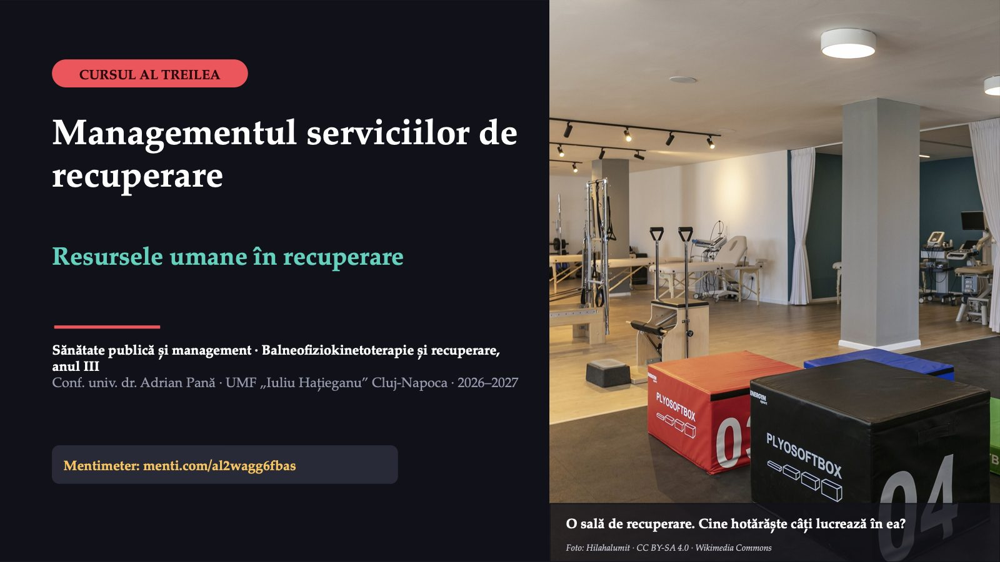
1 / 44Astăzi privim serviciul care ar trebui să o primească pe pacienta A și oamenii care lucrează în el. Codul Mentimeter rămâne același toată ședința.
1
 2 / 44
2 / 44Am citit răspunsurile de la biletul de ieșire al ședinței a doua. Două lucruri se schimbă de azi: fișa de lucru are un singur diapozitiv, iar strategia lui Rose o reluăm chiar acum.
De câți fizioterapeuți are nevoie un serviciu și cine hotărăște?
![AZI De câți fizioterapeuți are nevoie un serviciu și cine hotărăște? 1 · UN COLECTIV Ce măsuri pot reduce concediile medicale pentru durere de spate într-un colectiv? Rose, reluat pe magazinul pacientei A. 2 · SERVICIUL Ce face un manager și cum se descrie, se planifică și se măsoară un serviciu de recuperare. 3 · OAMENII Cine are dreptul să lucreze ca fizioterapeut, cum se împart rolurile și câți fizioterapeuți îi trebuie serviciului. Jumătate din timp lucrați voi: voturi pe telefon, discuții cu colegul de bancă, două tabere și un joc de rol. Aveți nevoie de un telefon cu internet.](diapozitive/C03/003.jpg) 3 / 44
3 / 44Azi răspundem la o întrebare de manager: de câți fizioterapeuți are nevoie un serviciu și cine hotărăște. Ședința are trei părți, toate pe același caz.
Care măsură acționează asupra condițiilor pentru toți angajații, nu numai asupra celor care au deja dureri?
![MENTIMETER · VOT MAGAZINUL PACIENTEI A Managerul vrea mai puține concedii medicale pentru durere lombară anul viitor, cu un buget limitat. Care măsură acționează asupra condițiilor pentru toți angajații, nu numai asupra celor care au deja dureri? A Trimiterea pacientei A la recuperare B Fizioterapie pentru cele trei colege cu dureri C Scaune ajustabile la toate casele de marcat și pauze de mișcare în fiecare tură D Un pliant despre durerea de spate, lăsat în vestiar Vot anonim. Rezultatul rămâne ascuns până după discuție.](diapozitive/C03/004.jpg) 4 / 44
4 / 44Votați înaintea oricărei explicații. Contează ce schimbă măsura și la cine ajunge.
Găsiți un argument pentru varianta voastră sau unul împotriva ei.
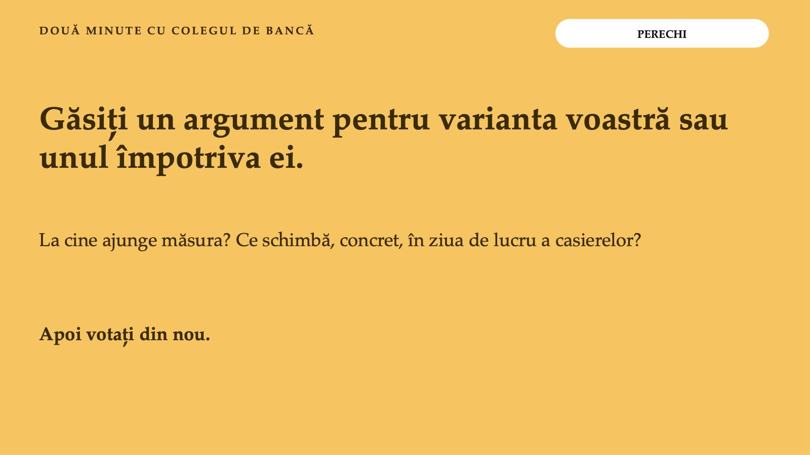
5 / 44Votați din nou. Apoi comparăm cu cursul al doilea.
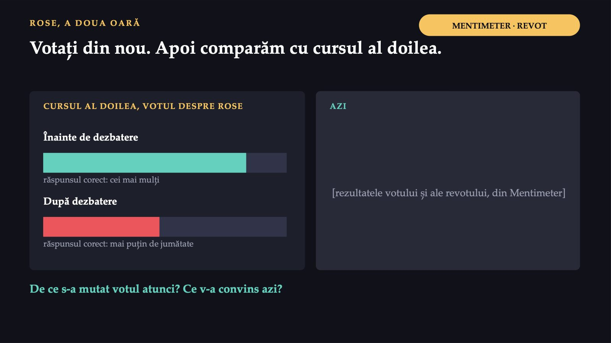
6 / 44La cursul al doilea, după dezbatere, votul s-a mutat de la răspunsul susținut de note spre altul. Un argument spus convingător nu e, prin asta, și un argument corect.
Două strategii, două întrebări diferite
![RĂSPUNSUL Două strategii, două întrebări diferite Strategia riscului înalt caută persoanele cu risc mare și intervine la ele: pacienta A și colegele cu dureri, la evaluare și la exerciții. Ajută pe cine suferă deja. Strategia populațională schimbă condițiile pentru toți: scaune la fiecare casă de marcat, pauze de mișcare în fiecare tură, un program de mișcare deschis tuturor. Reduce numărul celor care vor suferi. Paradoxul prevenției. O măsură cu beneficiu mare pentru comunitate aduce puțin fiecărui participant, de aceea motivația persoanei și a medicului e slabă. În exemplul cu 1 000 de angajați din cursul al doilea, peste două treimi dintre cazuri apăreau la riscul moderat. Sursa: Rose, „paradoxul prevenției”; notele cursului, secțiunea despre strategia lui Rose.](diapozitive/C03/007.jpg) 7 / 44
7 / 44Varianta cu scaunele și pauzele schimbă condiția pentru toți, la fiecare tură. Cele două strategii nu se exclud: prima ajută persoanele care suferă deja, a doua reduce numărul celor care vor ajunge să sufere.
Trei criterii, în sensul acestui curs
![O casă de marcat. Fără scaun. Foto: Triplec85 · CC BY-SA 4.0 · Wikimedia Commons CE FACE O MĂSURĂ POPULAȚIONALĂ Trei criterii, în sensul acestui curs 1 Ajunge la toți angajații, nu numai la cei care cer ajutor. 2 Schimbă o condiție a muncii, nu numai informația despre ea. 3 Se menține în timp, nu se aplică o singură dată. Populațional nu înseamnă eficient. O sinteză din 2023, la angajați de birou, găsește efecte mici, pe dovezi de certitudine scăzută. Pliantul ajunge la toți, dar nu schimbă nimic; un program de exerciții pentru toți, da.](diapozitive/C03/008.jpg) 8 / 44
8 / 44Dacă o măsură e populațională și dacă funcționează sunt două întrebări diferite. A doua se judecă pe sinteze ale studiilor, iar sinteza citită privește munca de birou, nu casele de marcat.
Primul loc liber: peste șapte săptămâni
![CAZUL ȘEDINȚEI Primul loc liber: peste șapte săptămâni AMBULATORIUL SPITALULUI MUNICIPAL Patru fizioterapeuți; unul, D., e și coordonatorul serviciului. Al cincilea a plecat în primăvară la o clinică privată, iar postul lui nu a fost ocupat. D. a cerut încă doi fizioterapeuți. Răspunsul directorului · bugetul de personal este fix 1 Arătați, cu cifre, de câți oameni are nevoie serviciul. 2 Arătați ce ați putea face mai bine cu oamenii pe care îi aveți. 3 Spuneți ce ar câștiga spitalul cu posturile cerute. Aceeași săptămână: doi pacienți reprogramați de trei ori; un medic de familie întreabă de ce pacienții lui se întorc netratați. Serviciu construit în scop didactic; cifrele sunt ipotetice.](diapozitive/C03/009.jpg) 9 / 44
9 / 44Pacienta A are trimitere la ambulatoriul de recuperare al spitalului municipal. Coordonatorul D. are de răspuns la trei cereri ale directorului.
Ce ar trebui să facă mai întâi coordonatorul D.?
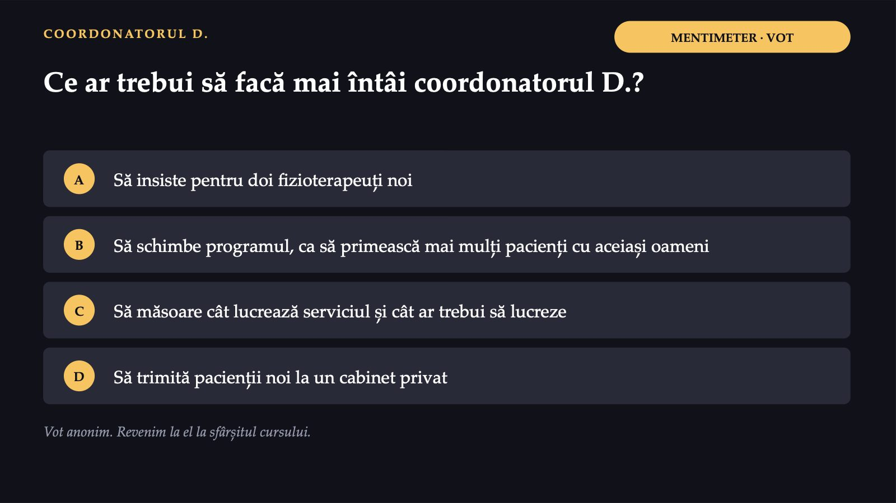
10 / 44Înaintea oricărei explicații: ce ar face, mai întâi, coordonatorul D.? Păstrăm rezultatul și îl comparăm la sfârșitul cursului.
Ce argument susține varianta aleasă?
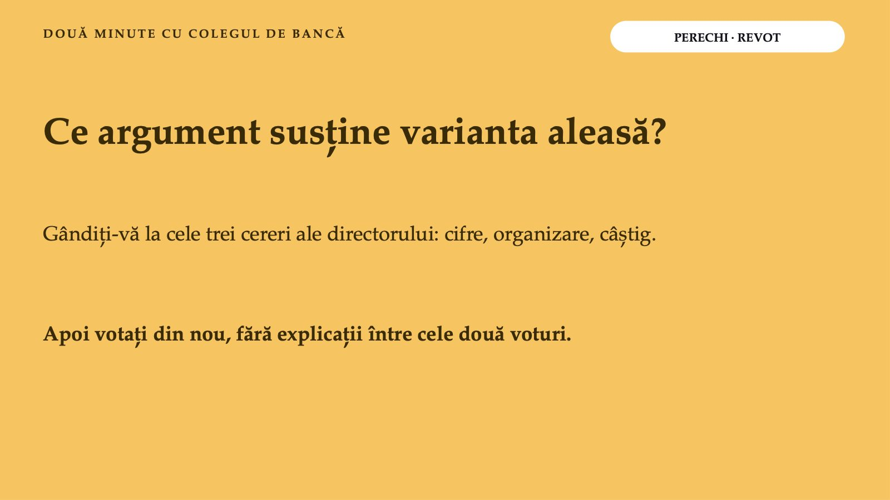
11 / 44Titlul cursului are două părți. Cazul le conține pe amândouă.
![RĂSPUNSUL PROVIZORIU Titlul cursului are două părți. Cazul le conține pe amândouă. Managementul serviciului ce face D. între cererea directorului și lista de așteptare: planifică, organizează, conduce, controlează. Resursele umane cine are dreptul să lucreze ca fizioterapeut, cum se împart rolurile în echipă, câți fizioterapeuți îi trebuie serviciului. Numărul de fizioterapeuți nu se apără cu impresia că „suntem prea puțini”, ci cu volumul de muncă măsurat. Restul cursului construiește acest răspuns, pas cu pas.](diapozitive/C03/012.jpg) 12 / 44
12 / 44Răspunsul provizoriu: oamenii se cer cu cifre. Ca să le avem, coordonatorul are nevoie de cele patru funcții ale managementului.
Patru funcții, numite în fișa disciplinei
![CE FACE UN MANAGER Patru funcții, numite în fișa disciplinei Planificarea stabilește ce trebuie obținut și pregătește acțiunile și resursele necesare. Organizarea stabilește structura, rolurile și împărțirea resurselor. Conducerea privește oamenii: încadrarea cu personal, coordonarea, motivarea, comunicarea. Controlul urmărește rezultatele față de ținte și arată ce trebuie corectat. În acest curs, coordonarea nu e o funcție separată: intră la conducere. Sursa: fișa disciplinei, tema a treia a cursului.](diapozitive/C03/013.jpg) 13 / 44
13 / 44Lista de funcții e cea din fișa disciplinei. Coordonarea activităților o tratăm ca parte a conducerii.
Ce funcție este fiecare situație?
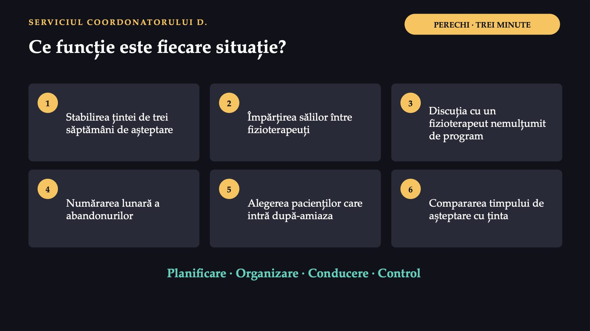
14 / 44Lucrați în perechi și atribuiți fiecare situație uneia dintre cele patru funcții. Votăm apoi pe două dintre ele.
Ce funcție a managementului este aceasta?
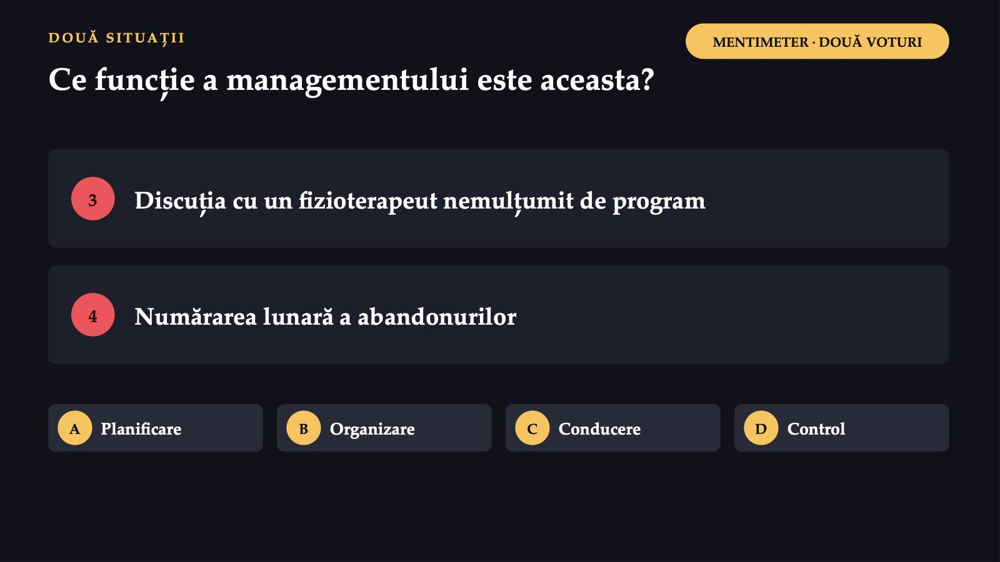
15 / 44Votăm întâi situația a treia, apoi situația a patra.
Un cerc, nu patru etape
![CONTROLUL REDESCHIDE PLANIFICAREA Un cerc, nu patru etape Planificare Organizare Conducere Control Dacă după trei luni așteptarea nu a scăzut, D. nu repetă planul: caută motivul în cifre. Mai puține ședințe decât era posibil, mai multe abandonuri, mai mulți pacienți trimiși decât se estimase. FIZIOTERAPEUTUL CA MANAGER Legea nr. 229/2016, art. 17: domeniul administrativ, „în managementul serviciilor de fizioterapie, cu responsabilitatea de a furniza informații privind activitatea de fizioterapie adecvată, în cadrul unor instituții sau comunități”. OMS, cadrul de competențe, 2020: „managementul și conducerea”, unul dintre cele cinci domenii ale muncii în recuperare. Managementul face parte din meseria voastră.](diapozitive/C03/016.jpg) 16 / 44
16 / 44Funcțiile se repetă și se sprijină una pe alta. Managementul nu aparține numai directorului de spital: legea îl numește printre domeniile de practică ale fizioterapeutului.
Care misiune se poate verifica?
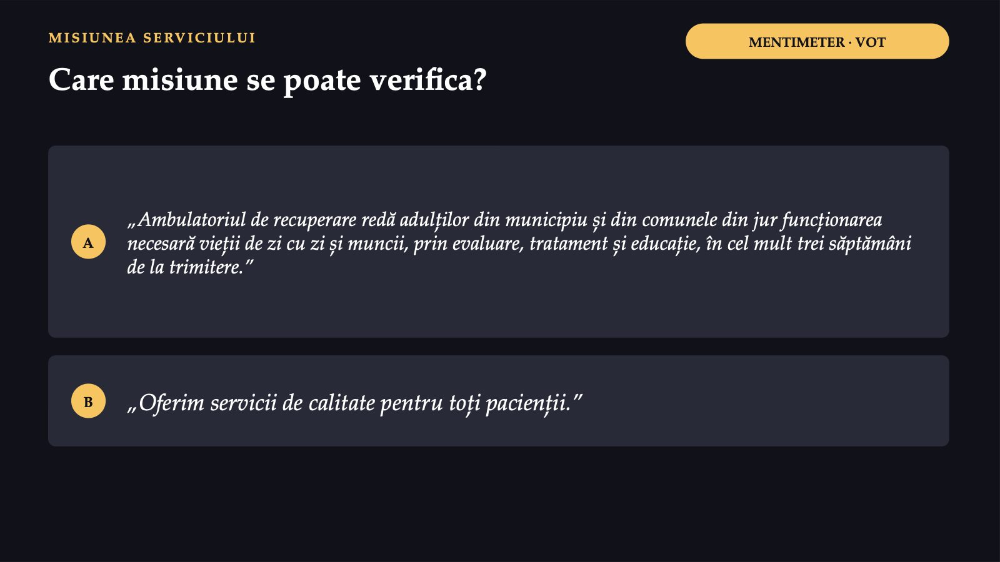
17 / 44Două formulări ale misiunii aceluiași serviciu. Alegeți-o pe cea care poate fi verificată.
Prima misiune se poate verifica: spune publicul, rezultatul și termenul.
![MISIUNE, STRUCTURĂ, PROCESE Prima misiune se poate verifica: spune publicul, rezultatul și termenul. Trimiterea Consultul MFR, prescripția Programarea Examinarea, planul Ședințele Reevaluarea, externarea Procesul: fiecare pas poate produce așteptare. Structura: oamenii și calificările lor, spațiile, aparatele, programul, subordonarea. Fizioterapeuții lucrează în sistemul public sau privat, independent sau în colaborare (Legea nr. 229/2016, art. 15). Paturile arată numai partea de spital a recuperării, nu ambulatoriile, bazele de tratament sau cabinetele. Paturi de recuperare la 100 000 de locuitori, 2024 România 72,37 Bulgaria 110,91 Ungaria 135,44 Germania 192,41 Polonia 195,03 Sursa: Eurostat, paturi de spital pentru îngrijiri de recuperare la 100 000 de locuitori, 2024.](diapozitive/C03/018.jpg) 18 / 44
18 / 44Misiunea spune pe cine servește serviciul și ce le oferă; structura, cu ce lucrează; procesele, cum circulă pacientul prin el. România avea în 2024 13 791 de paturi de recuperare, 72,37 la 100 000 de locuitori.
Unde e serviciul acum?
![PLANIFICAREA STRATEGICĂ Unde e serviciul acum? TERMEN NOU Analiza SWOT: ce avem bun, ce avem slab, ce ne poate ajuta din afară și ce ne poate încurca din afară. Puncte tari interne Puncte slabe interne Oportunități externe Amenințări externe Interne: țin de serviciu, iar serviciul le poate schimba. Externe: vin din spital, de la casa de asigurări, din piața muncii sau din populație. Serviciul le poate folosi sau se poate apăra de ele, dar nu le controlează. Sursa: o sinteză sistematică din 2025 despre analiza SWOT; notele cursului.](diapozitive/C03/019.jpg) 19 / 44
19 / 44Numele vine de la inițialele cuvintelor englezești: strengths, weaknesses, opportunities, threats. Regula de bază: separăm ce ține de serviciu de ce vine din afară.
În ce rubrică intră factorul?
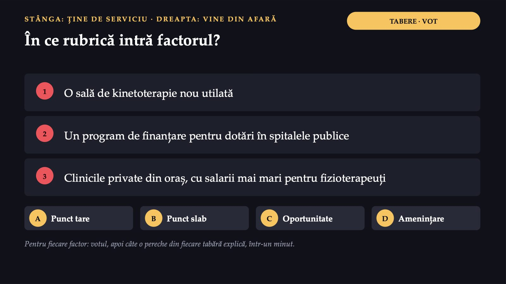
20 / 44Tabăra din stânga reprezintă ce ține de serviciu, cea din dreapta ce vine din afară. Votăm pe rând fiecare factor.
Încă trei factori
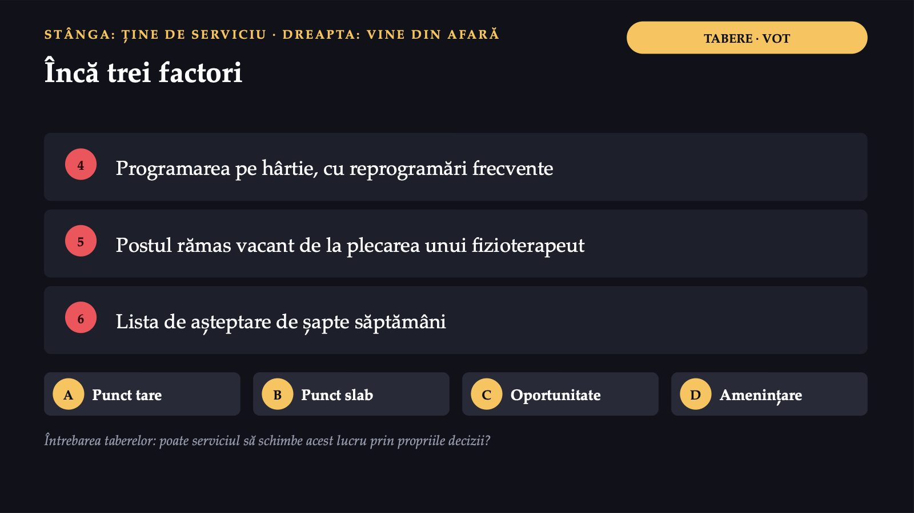
21 / 44Ultimii trei factori. Al șaselea e cel mai discutat: gândiți-vă dacă e o cauză sau un efect.
Poate serviciul să schimbe asta prin propriile decizii?
![RĂSPUNSUL · TABLOUL SERVICIULUI D. (CONSTRUIT) Poate serviciul să schimbe asta prin propriile decizii? PUNCTE TARI Experiența în recuperarea după accident vascular cerebral; sala de kinetoterapie nou utilată; colaborarea cu medicul MFR. PUNCTE SLABE Postul vacant; programarea pe hârtie; evaluările inițiale făcute de un singur fizioterapeut; abandonul nemăsurat. OPORTUNITĂȚI Finanțarea pentru dotări; doi absolvenți interesați de un post; un angajator local care vrea un program de mișcare. AMENINȚĂRI Clinicile private, cu salarii mai mari; bugetul de personal fixat; mai mulți vârstnici trimiși după fractură de șold. Lista de așteptare nu e o amenințare: e un efect al punctelor slabe. Lectura: experiența cu pacienții după accident vascular cerebral susține cererea de finanțare; programarea electronică eliberează ore fără posturi noi.](diapozitive/C03/022.jpg) 22 / 44
22 / 44Lectura tabloului contează mai mult decât completarea lui. Plecarea fizioterapeuților spre privat vine din piața muncii; postul vacant ține de serviciu.
Pauză
23 / 44Ce face un indicator util
![CONTROLUL ARE NEVOIE DE CIFRE Ce face un indicator util Numărătorul ce se numără Numitorul față de ce Sursa de unde vin datele Frecvența cât de des se calculează TERMEN NOU Indicator de activitate: o cifră a serviciului despre care se știe exact cum a fost calculată, din ce date și cât de des. De activitate: cât lucrează serviciul (pacienți noi, ședințe, evaluări). De utilizare și de acces: cât din capacitate se folosește și cât de repede ajung pacienții (utilizarea capacității, așteptarea, abandonul). „Câteva sute de ședințe într-o lună” nu spune nimic fără numitor.](diapozitive/C03/024.jpg) 24 / 44
24 / 44Al doilea termen nou. Un indicator fără numitor poate induce în eroare: nu știm câte ședințe erau posibile și cu câți oameni.
Care este numitorul potrivit pentru ponderea pacienților care au abandonat tratamentul?
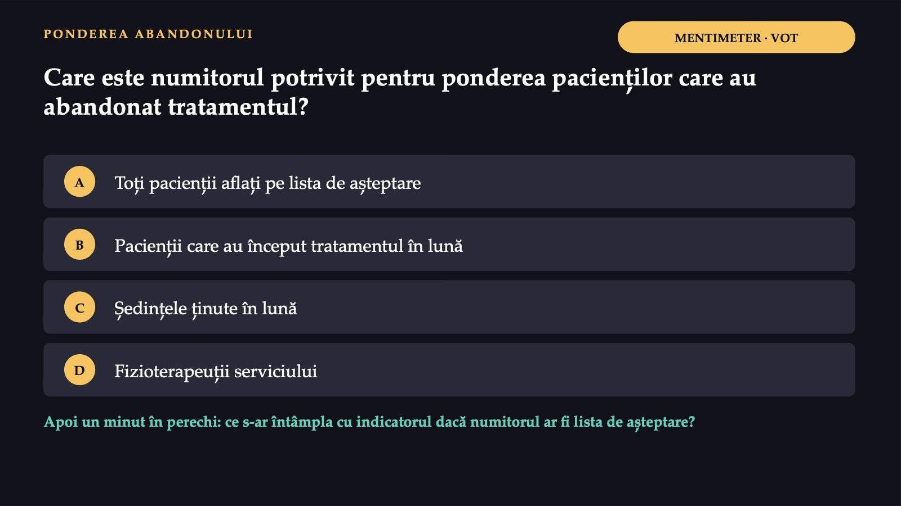
25 / 44Numitorul spune față de ce numărăm. Votați, apoi discutați cu colegul ce s-ar schimba cu alt numitor.
85%
 26 / 44
26 / 44Ponderea abandonului are ca numitor pacienții care au început tratamentul în aceeași lună. Așteptarea medie de 49 de zile înseamnă șapte săptămâni.
Ce spun cei trei indicatori împreună?
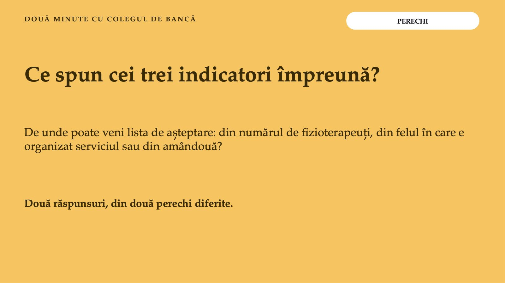
27 / 44Citiți cifrele împreună, nu una câte una. O singură lună de date nu separă explicațiile; indicatorii se urmăresc mai multe luni la rând.
Pe baza cărui document își exercită fizioterapeutul profesia în România?
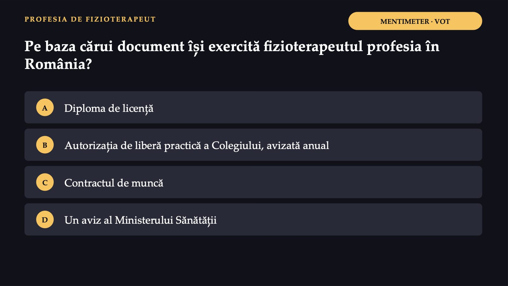
28 / 44O întrebare practică pentru primul vostru contract.
Cine are dreptul să lucreze
![LEGEA NR. 229/2016 · FORMA CONSOLIDATĂ LA 12.08.2019 Cine are dreptul să lucreze Art. 4: „fizioterapeutul este absolventul de studii universitare, posesor al unui titlu oficial de calificare în fizioterapie, conform prevederilor art. 11, care aplică, sub prescripție medicală, activitățile specifice prevăzute la art. 13” Art. 11 lit. a): „diplomă de licență eliberată de o instituție de învățământ superior acreditată sau autorizată provizoriu din România”; pct. (viii): „balneofiziokinetoterapie și recuperare” Art. 14 alin. (1): „fizioterapeutul își exercită profesia pe baza autorizației de liberă practică eliberată de Colegiul Fizioterapeuților din România, avizată anual” CONDIȚIILE (ART. 8) titlu oficial de calificare; fără nedemnitate sau incompatibilitate; apt medical; membru al Colegiului. TERMENELE (ART. 22) autorizația, în cel mult 12 luni de la absolvire; altfel, la cerere, una provizorie, valabilă cel mult 6 luni. Sursa: Legea nr. 229/2016, forma consolidată pe Portalul legislativ; art. 8 și 22 sunt rezumate, nu citate.](diapozitive/C03/029.jpg) 29 / 44
29 / 44Profesia se exercită pe baza autorizației de liberă practică, eliberată de Colegiu și avizată anual. Diploma e una dintre condiții, nu temeiul exercitării.
Ce verifică un coordonator la angajare
![COLEGIUL FIZIOTERAPEUȚILOR DIN ROMÂNIA Ce verifică un coordonator la angajare Art. 20 alin. (1): „Colegiul Fizioterapeuților din România este organizație profesională, cu personalitate juridică, neguvernamentală, de interes public, apolitică, fără scop patrimonial, cu responsabilități delegate de autoritatea de stat” Atribuții (art. 21, rezumat): autorizarea, monitorizarea și controlul profesiei, cu Ministerul Sănătății; Codul deontologic; standardele de calitate; Registrul unic al fizioterapeuților. LA ANGAJARE, COORDONATORUL D. VERIFICĂ autorizația de liberă practică, avizată pentru anul în curs asigurarea de răspundere civilă, valabilă dovada creditelor anuale de educație medicală continuă (art. 14 alin. (2)) Fără avizul anual, condițiile legii nu sunt îndeplinite, oricât de bun ar fi fizioterapeutul clinic.](diapozitive/C03/030.jpg) 30 / 44
30 / 44Verificarea documentelor ține de funcția de organizare. Un fizioterapeut fără aviz anual nu îndeplinește condițiile legii.
3 351
![CÂȚI FIZIOTERAPEUȚI ARE ROMÂNIA 3 351 fizioterapeuți în practică, 2024: 17,59 la 100 000 de locuitori. În 2015: 1 280, adică 6,46. UE-27, 2023: 147,48 (estimare Eurostat); România: 15,98. Fiecare țară raportează după propriile registre. Cu această rezervă, România lucrează cu mult mai puțini fizioterapeuți raportați la populație decât media europeană. La 100 000 de locuitori, 2024 România 17,59 Bulgaria 30,21 Ungaria 73,48 Polonia 169,83 Germania 245,46 Sursa: Eurostat, fizioterapeuți în practică la 100 000 de locuitori, 2015, 2023 și 2024.](diapozitive/C03/031.jpg) 31 / 44
31 / 44Creșterea e reală, dar punctul de plecare a fost foarte jos. Diferențele dintre țări se citesc cu prudență: nu știm cum numără România fizioterapeuții din sectorul privat.
Cine poate face parte din echipă
![Sală de proceduri de fizioterapie, Karelia, Rusia Foto: Igor Georgievskiy · CC BY-SA 4.0 · Wikimedia Commons ECHIPA DE RECUPERARE Cine poate face parte din echipă OMS, 2023: specialiștii care pot fi cei mai potriviți pentru o intervenție audiologul · dieteticianul și nutriționistul · asistentul medical · terapeutul ocupațional · oftalmologul · optometristul · fizioterapeutul · psihologul · protezistul-ortezistul · asistentul social · profesorul de educație specială · medicul de medicină fizică și de reabilitare · logopedul Lista nu e o prescripție: se citește în contextul fiecărei țări. Pentru pacientul-ancoră (fișa disciplinei): medicul MFR, fizioterapeutul, terapeutul ocupațional, asistentul medical, psihologul, pacientul și familia.](diapozitive/C03/032.jpg) 32 / 44
32 / 44Ideal, mai ales la afecțiunile complexe, recuperarea o oferă echipe pluridisciplinare. Pacientul și familia sunt în echipă: obiectivele se stabilesc împreună cu pacientul, iar exercițiile se fac în mare parte acasă.
Medicul și fizioterapeutul
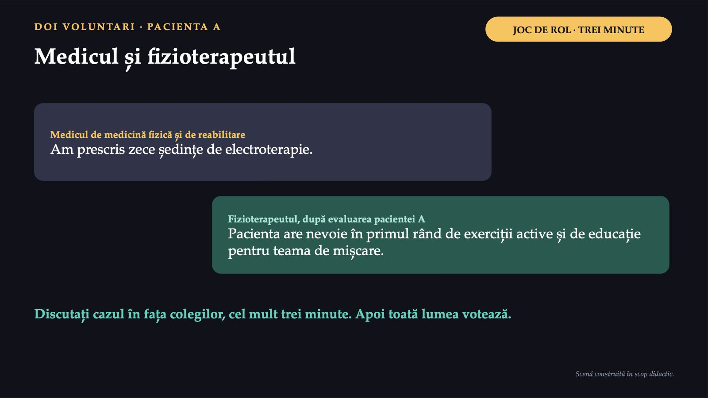
33 / 44Ce ar fi făcut fizioterapeutul?
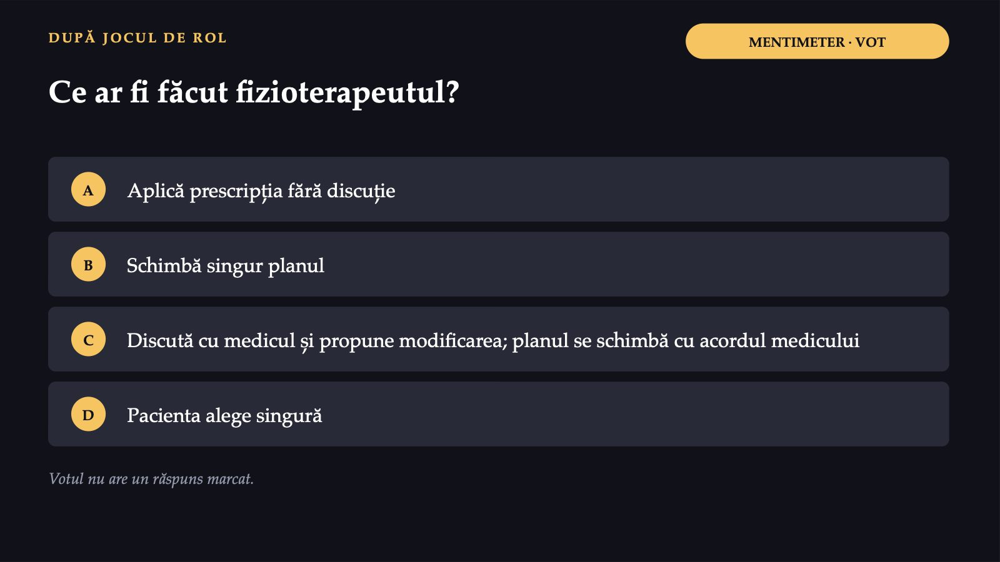
34 / 44Votul vostru, apoi legea: ce spun art. 4 și art. 13 despre prescripție și despre plan.
Prescripția medicului, planul fizioterapeutului
![CINE DECIDE CE Prescripția medicului, planul fizioterapeutului Medicul specialist stabilește diagnosticul clinic și prescrie recuperarea. Fizioterapeutul evaluează funcția, stabilește nevoia de intervenție și elaborează planul fizioterapeutic, sub prescripția medicului specialist (art. 13). Art. 17, domeniul clinic: „de a planifica, supraveghea și evalua un plan terapeutic” Matricea de responsabilități: pe rânduri, activitățile drumului pacientului; pe coloane, membrii echipei. În fiecare celulă: cine face, cine răspunde, cine e consultat, cine e doar informat. Regula de lucru a cursului: pentru fiecare activitate răspunde o singură persoană. Dacă la reevaluare răspund trei, în practică nu răspunde niciunul.](diapozitive/C03/035.jpg) 35 / 44
35 / 44Varianta cu discuția și acordul medicului respectă limita din lege: prescripția e a medicului, planul e al fizioterapeutului. Matricea o completați la lucrarea practică a treia.
Câți fizioterapeuți îi trebuie serviciului coordonatorului D.?
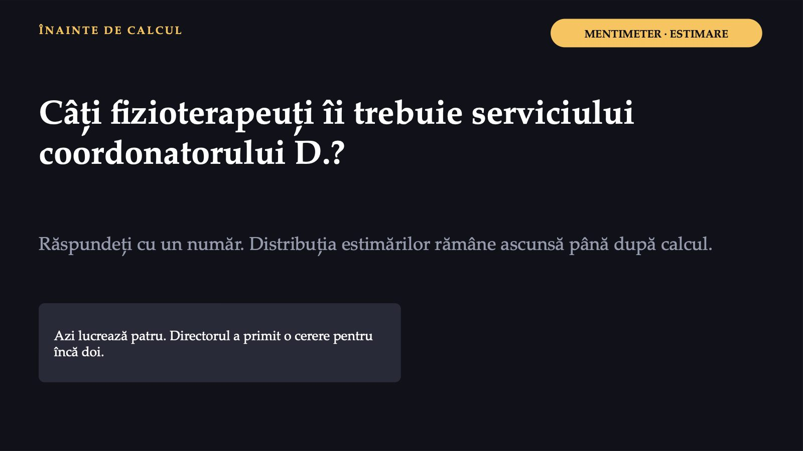
36 / 44Estimați pe telefon, cu un număr, înainte de orice calcul.
Necesarul de personal, din volumul de muncă
![METODA OMS Necesarul de personal, din volumul de muncă TERMEN NOU Metoda WISN: câți fizioterapeuți ar trebui să fie, dacă numărăm ce au de făcut și cât timp le ia. PAȘII MANUALULUI OMS 1 categoria de personal și unitatea 2 timpul de lucru disponibil 3 componentele volumului de muncă 4 standardele de activitate 5 volumul standard de muncă 6 factorii de ajustare 7 necesarul de personal 8 analiza și interpretarea FACTORUL PENTRU CATEGORIE 1 / (1 − procentul activităților de sprijin / 100) Activitățile de sprijin le fac toți: documentarea, ședințele de echipă. Exemplul lucrat are etapele A–F, notate cu litere, ca să nu se confunde cu pașii manualului.](diapozitive/C03/037.jpg) 37 / 44
37 / 44Al treilea termen nou. Principiul: necesarul se calculează din munca efectivă a serviciului, nu din paturi, din numărul de locuitori sau din obișnuință.
Câți fizioterapeuți pentru ședințele de tratament?
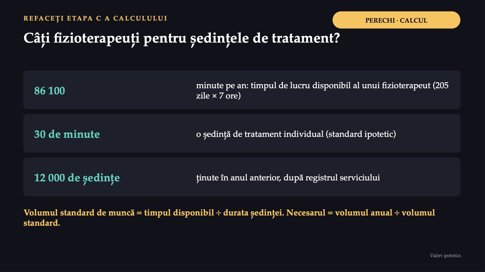
38 / 44Lucrați în perechi. Pacienții care așteaptă pe listă nu intră în volumul anual: el vine din registrul anului anterior.
Aproximativ 6 fizioterapeuți; serviciul are 4
![REZULTATUL · VALORI IPOTETICE Aproximativ 6 fizioterapeuți; serviciul are 4 A Timpul disponibil 260 − 55 = 205 zile; 205 × 7 = 1 435 ore; în minute, 86 100 B Volumul standard evaluare, 45 min: 1 913,3 pe an; ședință și reevaluare, 30 min: 2 870 pe an C Activitățile cu pacientul 1 200 / 1 913,3 = 0,627; 12 000 / 2 870 = 4,181; 1 000 / 2 870 = 0,348; total 5,157 D Sprijin, 10% factor 1 / 0,90 = 1,111; 5,157 × 1,111 = 5,730 E Coordonarea 40 / 205 = 0,195; 5,730 + 0,195 = 5,925 F Raportul WISN = existent / necesar = 4 / 5,925 = 0,675. Sub 1: personalul nu face față volumului de muncă. Lipsesc aproximativ 2 fizioterapeuți.](diapozitive/C03/039.jpg) 39 / 44
39 / 44Raportul WISN egal cu 1 înseamnă echilibru, peste 1 surplus, sub 1 personal insuficient pentru volumul de muncă. Cu cât raportul e mai mic, cu atât presiunea e mai mare.
Ce ar trebui să facă mai întâi coordonatorul D.?
![MENTIMETER · REVOT ÎNAPOI LA VOTUL DE LA ÎNCEPUT Ce ar trebui să facă mai întâi coordonatorul D.? [estimările voastre, din Mentimeter] Calculul: aproximativ 6 CE NU VEDE CALCULUL Volumul vine din registrul anului anterior: pacienții de pe listă nu intră în el. La prima aplicare, erorile merg aproape întotdeauna spre subînregistrarea muncii, deci necesarul iese subestimat. Un serviciu subdimensionat, care tratează puțini pacienți, poate obține un necesar prea mic. Un sfert dintre pacienți abandonează: o parte din problemă e de organizare. Votați din nou. Un manager bun aduce la director ambele analize.](diapozitive/C03/040.jpg) 40 / 44
40 / 44Calculul dă un temei cererii de doi fizioterapeuți, dar obligă și la cinste față de propriul serviciu: ce se poate rezolva cu oamenii existenți și ce nu se poate rezolva fără oameni noi.
Ce faceți diferit, de luni dimineață
 41 / 44
41 / 44Lista de așteptare nu e o fatalitate și nici o problemă numai a directorului. Fără autorizație, aviz și asigurare nu lucrați legal, oricât de bine ați lucra clinic.
Ce faceți, până când, unde o predați
![FIȘA DE LUCRU 3 Ce faceți, până când, unde o predați CE FACEȚI Analiza SWOT a unui serviciu de recuperare dintr-un scenariu; trei indicatori de activitate (numărător, numitor, sursă, frecvență); matricea de responsabilități a echipei pacientului-ancoră. PÂNĂ CÂND La finalul lucrării practice a treia sau în cel mult două zile după ea, cum prevede fișa disciplinei; termenul exact e în formularul lucrării. UNDE O PREDAȚI În formularul Microsoft Forms al lucrării, completat cu contul UMF. Lucrul la fișă începe în sală, la lucrarea practică, nu acasă.](diapozitive/C03/042.jpg) 42 / 44
42 / 44Fișa 3 folosește direct ce am lucrat azi: analiza SWOT, indicatorii și matricea de responsabilități.
Strategie, management, oameni: ce a rămas
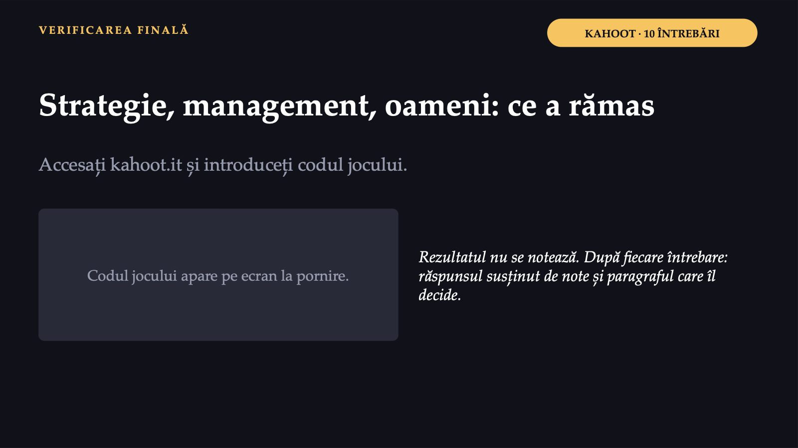
43 / 44Trei întrebări pentru titular
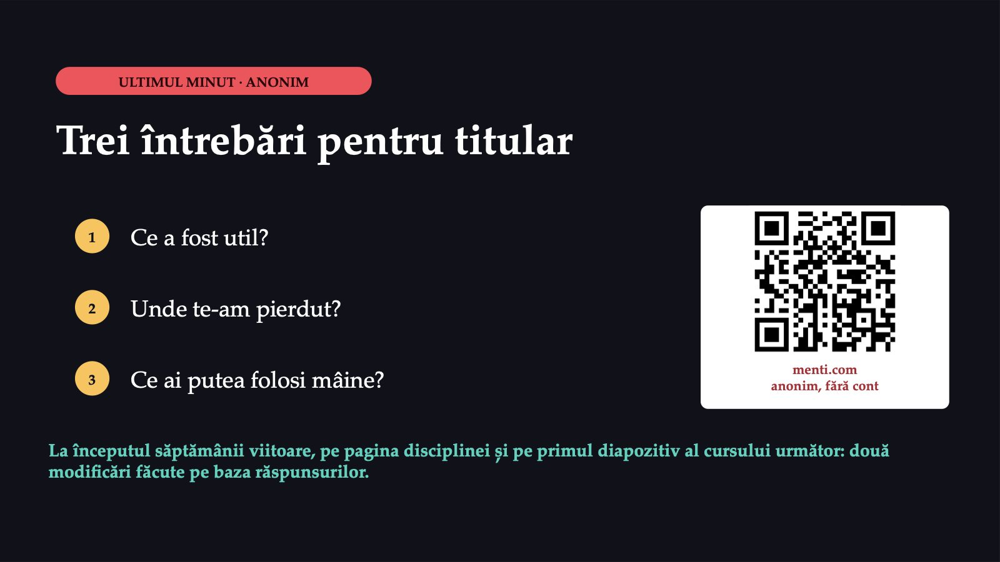
44 / 44Săgeți sau spațiu: navigare · O: vedere de ansamblu · N: notele prezentatorului · F: ecran complet · Esc: închidere